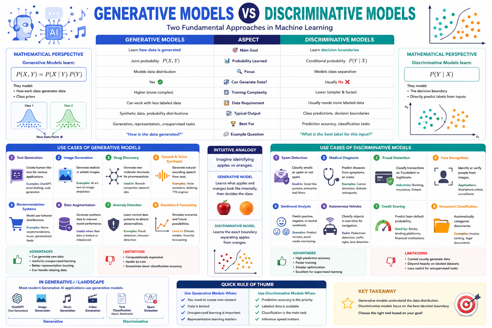
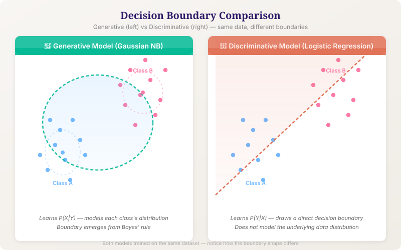

A complete study guide comparing two fundamental paradigms in machine learning.
In machine learning, models can be broadly categorised into two families based on how they approach the problem of learning from data: generative models and discriminative models. They differ fundamentally in what probability distribution they learn.
A generative model learns the joint probability distribution \( P(X, Y) \) — or \( P(X) \) in the unsupervised case. By modelling how data is actually generated, it can produce new samples that resemble the training data. Examples: Naive Bayes, Gaussian Mixture Models, GANs, VAEs, Autoregressive models.
A discriminative model learns the conditional probability distribution \( P(Y \mid X) \) — i.e., the decision boundary that separates classes. It directly models how to discriminate between classes given the input. It cannot generate new data. Examples: Logistic Regression, SVMs, Random Forests, Neural Network classifiers.
| Property | Generative Model | Discriminative Model |
|---|---|---|
| Learns | \( P(X, Y) \) or \( P(X) \) | \( P(Y \mid X) \) |
| Decision boundary | Implicit (via Bayes' rule) | Explicit |
| Can generate data? | ✅ Yes | ❌ No |
| Handles missing data? | ✅ Naturally | ❌ Requires imputation |
| Computational cost | Higher (models full distribution) | Lower (models boundary only) |
| Data efficiency | Good with less data (stronger assumptions) | Often needs more data |
| Typical accuracy (given enough data) | Slightly lower (asymptotically) | Often higher |
| Example models | Naive Bayes, GAN, VAE, HMM | Logistic Regression, SVM, NN |
Generative approach: Model \( P(\text{email}, \text{spam}) \) — learn the distribution of words in spam emails and in legitimate emails. To classify a new email, use Bayes' rule to compute \( P(\text{spam} \mid \text{email}) \).
Discriminative approach: Directly model \( P(\text{spam} \mid \text{email}) \) — learn the boundary that separates spam from non-spam based on word features, without modelling how each class generates emails.
Both generative and discriminative models follow a similar high-level pipeline, but the internal steps differ significantly. Below is a side-by-side comparison.
Both: Collect labelled (or unlabelled) data. Clean, normalise, split into train/validation/test sets.
Generative nuance: Can leverage unlabelled data more easily (semi-supervised learning).
Generative: Choose a family of distributions for \( P(X|Y) \) and a prior \( P(Y) \). E.g., Gaussian for features + Categorical for labels.
Discriminative: Choose a functional form for the decision boundary. E.g., logistic function, decision tree, kernel function.
Generative: Maximise joint likelihood — fit \( P(X|Y) \) and \( P(Y) \) to the training data using MLE or MAP.
Discriminative: Maximise conditional likelihood — fit \( P(Y|X) \) directly using methods like gradient descent, hinge loss, or cross-entropy.
Generative: Use Bayes' rule to compute \( P(Y|X) = \frac{P(X|Y)P(Y)}{P(X)} \). Predict the class with highest posterior.
Discriminative: Directly evaluate \( P(Y|X) \) from the learned function. No need for Bayes' rule.
Generative only: Sample from \( P(X|Y) \) (or \( P(X) \) directly) to create entirely new data points — images, text, audio, etc.
Discriminative: Cannot generate new data — it has no model of \( P(X) \).
Both: Evaluate on held-out test set using accuracy, precision, recall, F1, ROC-AUC.
Generative extra: Also evaluate sample quality (FID, Inception Score, perplexity, log-likelihood on test data).
Generative (Naive Bayes): For each digit 0–9, learn a distribution over pixel intensities \( P(\text{pixels} \mid \text{digit}) \). To classify, compute which digit's distribution best explains the observed pixels. Also, sample new "digit-like" images from each distribution.
Discriminative (Softmax Regression): Directly learn the decision boundaries between the 10 digit classes using a softmax output. Given a new image, output the most probable digit — but you cannot generate new digit images.
The fundamental difference lies in what probability is modelled. Use the interactive demo below to see how generative and discriminative approaches learn differently on a 2D toy dataset.
Click points or adjust the slider to add noise — watch how each model's decision boundary changes.
Generative: Models \( P(X, Y) = P(X \mid Y) P(Y) \). Prediction:
\( \hat{y} = \arg\max_y P(y \mid x) = \arg\max_y P(x \mid y) P(y) \)
Discriminative: Models \( P(Y \mid X) \) directly. Prediction:
\( \hat{y} = \arg\max_y P(y \mid x) \)
Generative models make stronger assumptions about the data distribution (e.g., features are independent given the class — Naive Bayes assumption). This can be a disadvantage when assumptions are wrong, but an advantage when data is scarce. Discriminative models make fewer assumptions and often perform better with abundant data.
The internal components of generative and discriminative models differ in structure and purpose.
| Component | Naive Bayes (Generative) | Logistic Regression (Discriminative) |
|---|---|---|
| Learns | \( P(X|Y) \) and \( P(Y) \) | \( P(Y|X) \) directly |
| Parameters | Class means, variances, priors | Weight vector \( w \), bias \( b \) |
| Optimisation | Closed-form MLE | Iterative (gradient descent) |
| Assumption | Features independent given class | Linear decision boundary |
| Convergence | \( O(\log n) \) — very fast | \( O(n) \) per epoch |
Generative (Naive Bayes): Learns \( P(\text{word} \mid \text{class}) \) for every word — e.g., 90% of "free" appears in spam. Stores these probabilities in a lookup table.
Discriminative (Logistic Regression): Learns a weight for each word — positive weight pushes toward spam, negative toward non-spam. The sum of weighted word counts gives the log-odds of spam.


Test your understanding of generative vs discriminative models. 10 questions with instant feedback.